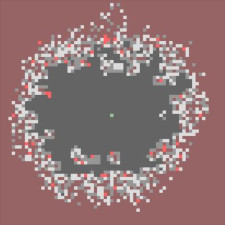

Rasmus Kristoffer Pedersen
Welcome to my personal website. Here you will find my Curriculum Vitae as well as links to some of my other stuff.
I am currently employed as a PostDoc at Roskilde University, where I am part of the PandemiX research group, investigating historical pandemics and the COVID-19 pandemic.
Read more about PandemiX here.
In my Ph.D. I worked with mathematical modelling of MPNs, as part of the Cancitis Research Group.
Read more about Cancitis here here.
Link to PDF-version of CV
Quick links for various interactive visualizations:
-
Interactive SIRS-model
Article (in danish) -
Interactive SIR-model
Article (in danish) -

-
Interactive COVID-19 alpha variant
Article (in danish)
-
Interactive figure of viral load (COVID-19)

- 
-

-


Scientific publications
"COVID-19 mortality attenuated during widespread Omicron transmission, Denmark, 2020 to 2022"
Nikolaj U. Friis, Tomas Martin-Bertelsen, Rasmus K. Pedersen, Jens Nielsen, Tyra G. Krause, Viggo Andreasen, Lasse S. Vestergaard
"Understanding Hematopoietic Stem Cell Dynamics - Insights from Mathematical Modelling"
Rasmus K. Pedersen, Morten Andersen, Thomas Stiehl, Johnny T. Ottesen
"HSC niche dynamics in regeneration, pre-malignancy and cancer: Insights from mathematical modeling"
Rasmus K. Pedersen, Morten Andersen, Vibe Skov, Lasse Kjær, Hans C. Hasselbalch, Johnny T. Ottesen, Thomas Stiehl
"Temperate climate malaria in nineteenth century Denmark"
Mathias Mølbak Ingholt, Tzu Tung Chen, Franziska Hildebrandt, Rasmus K. Pedersen, Lone Simonsen
"A novel integrated biomarker index for the assessment of hematological responses in MPNs during treatment with hydroxyurea and interferon-alpha2"
Marc J.B. Dam, Rasmus K. Pedersen, Trine A. Knudsen, Morten Andersen, Christina Ellervik, Morten K. Larsen, Lasse Kjær, Vibe Skov, Hans C. Hasselbalch, Johnny T. Ottesen
"Dose-dependent mathematical modeling of interferon-α-treatment for personalized treatment of myeloproliferative neoplasms"
Rasmus K. Pedersen, Morten Andersen, Trine A. Knudsen, Vibe Skov, Lasse Kjær, Hans C. Hasselbalch, Johnny T. Ottesen
"Mathematical modelling of the hematopoietic stem cell-niche system: Clonal dominance based on stem cell fitness"
Rasmus K. Pedersen, Morten Andersen, Thomas Stiehl, Johnny T. Ottesen
"Data-driven analysis of the kinetics of the JAK2V617F allele burden and blood cell counts during hydroxyurea treatment of patients with polycythemia vera, essential thrombocythemia, and primary myelofibrosis"
Marc J. B. Dam, Rasmus K. Pedersen, Trine A. Knudsen, Morten Andersen, Vibe Skov, Lasse Kjær, Hans C. Hasselbalch, Johnny T. Ottesen
"Mathematical Modeling of MPNs Offers Understanding and Decision Support for Personalized Treatment."
Johnny T. Ottesen, Rasmus K. Pedersen, Marc J. B. Dam, Trine A. Knudsen, Vibe Skov, Lasse Kjær, Morten Andersen
"Data-driven analysis of JAK2V617F kinetics during interferon-alpha2 treatment of patients with polycythemia vera and related neoplasms"
Rasmus K. Pedersen, Morten Andersen, Trine A. Knudsen, Zamra Sajid, Johanne Gudmand-Hoeyer, Marc J. B. Dam, Vibe Skov, Lasse Kjær, Christina Ellervik, Thomas S. Larsen, Dennis Hansen, Niels Pallisgaard, Hans C. Hasselbalch, Johnny T. Ottesen
"Bridging blood cancers and inflammation: The reduced Cancitis model"
Johnny T. Ottesen, Rasmus K. Pedersen, Zamra Sajid, Johanne Gudmand-Hoeyer, Katrine O. Bangsgaard, Vibe Skov, Lasse Kjær, Trine A. Knudsen, Niels Pallisgaard, Hans Carl Hasselbalch, Morten Andersen
"Mathematical Modelling as a Proof of Concept for MPNs as a Human Inflammation Model for Cancer Development"
Morten Andersen, Zamra Sajid, Rasmus K. Pedersen, Johanne Gudmand-Hoeyer, Christina Ellervik, Vibe Skov, Lasse Kjær, Niels Pallisgaard, Torben A. Kruse, Mads Thomassen, Jesper Troelsen, Hans Carl Hasselbalch, Johnny T. Ottesen
Presentations, posters and more
"How to visualize your science"
Invited presentation
"Model-based approach for determining COVID-19 incidence for different testing intensities"
Contributed Talk
"Mathematical Modelling of Myeloproliferative Neoplasms and Hematopoietic Stem Cells"
Contributed Talk
"Modelling Hematopoietic Stem Cells and their Interaction with the Bone Marrow Micro-Environment."
Contributed Talk (Cancelled due to Corona-Virus)
"Modelling Hematopoietic Stem Cells and their Interaction with the Bone Marrow Micro-Environment."
Online talk given for "Statistics and Biomathematics Seminar"
"Modelling hematopoietic stem cells and their interaction with the bone marrow micro-environment."
Contributed Talk
"Modelling hematopoietic stem cells and their interaction with the bone marrow micro-environment."
Talk at "Stem Cell Modelling Day"
"Modelling the Dynamics of Hematopoietic Stem Cells"
Poster at "SIAM Conference on Applications of Dynamical Systems"
"Modelling of Quiescent Stem Cells in Relation to Myeloproliferative Neoplasms"
Poster at "European Conference on Mathematical and Theoretical Biology"
Additional science-communication
In 2021 and 2022, I wrote and co-wrote a number of science-communication-articles, for the broad public, published at danish science-news website videnskab.dk. For a complete list, see here.
"Communicating Mathematics with Interactive Visualizations"
Talk at Studiensfonds Community Conference, Bielefeld, Germany
"Communicating Science and Mathematics with Interactive Visualizations"
Talk at DataViz CPH meetup
"Interaktive Visualiseringer til Videnskabelig Formidling - Hvordan matematiske modeller gøres forståelige ved hjælp af interaktive simuleringer"
VIDEO LINK
IDA webinar (In danish)
"Communicating Science with p5.js - How interactive simulations and creative coding can make the complex relatable"
Talk at "Processing Community Day 2020"
"The benefits of building and working with interactive simulations - Interactive simulations for better model intuition"
Blog post for "Mathematical Oncology" blog
Education
PhD - Mathematical modelling of myeloproliferative neoplasms
Master of science in mathematics and physics
Bachelor-degree in mathematics and physics
HTX
Physics A-level / Mathematics A-level
Experience
Research assistant at Department of Science and Environment
PostDoc at PandemiX research center
Course teacher - "Modelling Populations and Epidemics"
Course teacher - "Mathematical modelling and dynamic systems"
Teaching assistant - BK2: "Experimental Methods"
Teaching assistant - Calculus
Teaching assistant - BK1: "Empirical Data"
Developer and active part of Science Show
Full-time substitute mathematics teacher
Competencies
IT-Competencies
- Python - Much experience
- MATLAB - Much experience
- LaTeX - Much experience
- Java - Some experience
- C# - Some experience
- Microsoft Excel - Much experience
- General web development (HTML, Javascript, CSS) - Enough to make this website
Language
- Danish - C2, Native language
- English - C2
- German - B1
Volunteer work
- Member of the chairmanship - Tutoring 2014 Roskilde University
- Tutor for natural science - Tutoring 2013 Roskilde University
- Tutor for humanities - Tutoring 2012 Roskilde University